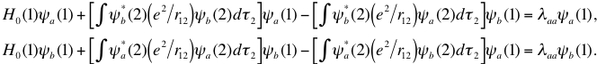

žWe can choose a linear combination of
and such that the right hand side of the above equations contain only and terms (similar to diagonalizing 2x2 matrix). This is equivalent to eliminating the orthogonality condition, while keeping the normality condition (However, even in this case we can show later that they are still orthogonal. See Exercise 4). In this new basis, the above variational equation becomes
